# download.file("https://github.com/jjvenky/gg501/blob/main/data/workshop_data.zip?raw=true",
# destfile = "workshop_data.zip" , mode='wb')
# unzip("workshop_data.zip", exdir = ".")
# file.remove("workshop_data.zip")3 Data/Analytic Critique
The use of modelling is increasing as more data is produced and codified into machine-readable forms. From classical statistical models to modern machine learning frameworks, models make inferences about real world processes that rely on implicit and explicit assumptions and decisions. In order to work effectively with the outptus of models we must be able to explore these underlying factors and how they influence what models produce. As machine learning models in particular are encoded into complex data-analytic workflows, we need to develop skills for interrograting and deconstructing models, their paramaters and uncertainties, and their strengths and weaknesses. The next two weeks will focus on developing some skills for working with model output and exploring their fit in the context of R-based data science workflow, however similar tools exist and can be used in other languages and/or modelling environments.
3.1 Spatial modelling example - adapted workshop example
The data for this workshop demo exists as multiple files and folders, so we have zipped them up and posted them to this github repo. Note that we have to use the raw link to get access to the actual data file not the page that shows the file, with that link we can follow the workflow we have used before to download, unzip and remove the zip file. Note that his zip file is large (~17 mb) so we probably only want to download it once.
Read in and examine the data:
library(readr)
library(dplyr)
Attaching package: 'dplyr'The following objects are masked from 'package:stats':
filter, lagThe following objects are masked from 'package:base':
intersect, setdiff, setequal, unionlibrary(tibble)
options(scipen=6)
plt <- read_csv("workshop_data/SampleData_Basics/plt.csv",
col_types = list(col_character(), col_integer(),
col_integer(), col_integer(), col_integer(), col_double(),
col_double(), col_integer(), col_double(), col_double(),
col_character(), col_integer()))
tree <- read_csv("workshop_data/SampleData_Basics/tree.csv", col_types = list(col_character()))
ref <- read_csv("workshop_data/SampleData_Basics/ref_SPCD.csv")Rows: 15 Columns: 4── Column specification ────────────────────────────────────────────────────────
Delimiter: ","
chr (2): SPNM, GRPNM
dbl (2): SPCD, GRPCD
ℹ Use `spec()` to retrieve the full column specification for this data.
ℹ Specify the column types or set `show_col_types = FALSE` to quiet this message.tree <- left_join(tree, ref, by="SPCD")
spfreq <- tree %>% select(PLT_CN, SPNM) %>% table() %>% as.data.frame.matrix() %>% select(aspen) %>% rownames_to_column("PLT_CN")
#reset any counts greater than 1 to 1 --binary response
spfreq$aspen[spfreq$aspen>0] <- 1
plt2 <- left_join(plt, spfreq, by=c("CN" = "PLT_CN"))Now we have created the plt2 dataset at the plot level which contains plots where aspen is present or absent. We will keep working with the instructions from the workshop slides and modernize some of the workflow:

## Forest Inventory data (Model response)
## Now, let's compile total carbon by plot and append to plot table.
# First, create a table of counts by plot.
plt2 <- tree %>% group_by(PLT_CN) %>%
summarise(CARBON_AG = sum(CARBON_AG)) %>%
mutate(CARBON_KG = round(CARBON_AG * 0.453592)) %>%
right_join(plt2, by = c("PLT_CN" = "CN")) %>%
mutate(CARBON_KG = replace(CARBON_KG, is.na(CARBON_KG), 0)) %>%
mutate(aspen = replace(aspen, is.na(aspen), 0)) %>%
mutate(CARBON_AG = NULL)Now we can carry on with some of the spatial data processing to build the variables for modelling, a very common workflow:
# Load libraries
library(rgdal) # GDAL operations for spatial dataLoading required package: spPlease note that rgdal will be retired during 2023,
plan transition to sf/stars/terra functions using GDAL and PROJ
at your earliest convenience.
See https://r-spatial.org/r/2022/04/12/evolution.html and https://github.com/r-spatial/evolution
rgdal: version: 1.6-3, (SVN revision 1187)
Geospatial Data Abstraction Library extensions to R successfully loaded
Loaded GDAL runtime: GDAL 3.4.1, released 2021/12/27
Path to GDAL shared files: /usr/share/gdal
GDAL binary built with GEOS: TRUE
Loaded PROJ runtime: Rel. 8.2.1, January 1st, 2022, [PJ_VERSION: 821]
Path to PROJ shared files: /home/jason/.local/share/proj:/usr/share/proj
PROJ CDN enabled: FALSE
Linking to sp version:1.5-1
To mute warnings of possible GDAL/OSR exportToProj4() degradation,
use options("rgdal_show_exportToProj4_warnings"="none") before loading sp or rgdal.library(raster) # Analyzing gridded spatial data
Attaching package: 'raster'The following object is masked from 'package:dplyr':
selectlibrary(rpart) # Recursive partitioning and regression trees
library(car)# For book (An R Companion to Applied Regression)Loading required package: carData
Attaching package: 'car'The following object is masked from 'package:dplyr':
recodelibrary(randomForest) # Generates Random Forest modelsrandomForest 4.7-1.1Type rfNews() to see new features/changes/bug fixes.
Attaching package: 'randomForest'The following object is masked from 'package:dplyr':
combinelibrary(PresenceAbsence)# Evaluates results of presence-absence models
library(ModelMap) # Generates and applies Random Forest models
# You may need to installed ModelMaps via remotes::install_github("cran/ModelMap")
# We need to extract data from spatial layers, so let's convert the plot table to a SpatialPoints object in R.
## We know the projection information, so we can add it to the SpatialPoints object.
prj4str <- "+proj=longlat +ellps=GRS80 +datum=NAD83 +no_defs"
ptshp <- SpatialPointsDataFrame(plt[,c("LON","LAT")], plt, proj4string = CRS(prj4str))
## Display the points
plot(ptshp)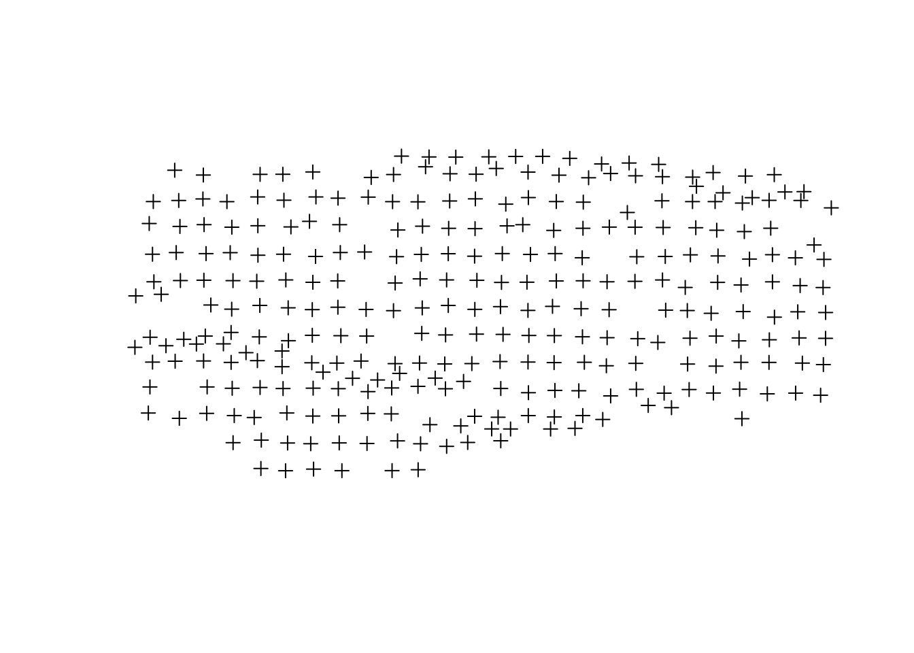
## Predictor variables:
# Landsat Thematic Mapper, band 5 30-m spectral data, band 5, resampled to 90 m
# Landsat Thematic Mapper, NDVI 30-m spectral data, NDVI, resampled to 90 m
# Classified forest/nonforest map 250-m classified MODIS, resampled to 90 m
# Elevation 30-m DEM, resampled to 90 m
# Slope 90-m DEM – derived in a following slides
# Aspect
## Set file names
b5fn <- "workshop_data/SampleData_Spatial/uintaN_TMb5.img" # Landsat TM–Band5
ndvifn <- "workshop_data/SampleData_Spatial/uintaN_TMndvi.img" # Landsat TM–NDVI
fnffn <- "workshop_data/SampleData_Spatial/uintaN_fnfrcl.img" # Forest type map (reclassed)
elevfn <- "workshop_data/SampleData_Spatial/uintaN_elevm.img" # Elevation (meters)
## Reclass raster layer to 2 categories
fnf <- raster("workshop_data/SampleData_Spatial/uintaN_fnf.img")
## Create raster look-up table
fromvect <- c(0,1,2,3)
tovect <- c(2,1,2,2)
rclmat <- matrix(c(fromvect, tovect), 4, 2)
## Generate raster and save to SpatialData folder
fnfrcl <- reclassify(x=fnf, rclmat, datatype="INT2U", filename="workshop_data/SampleData_Spatial/uintaN_fnfrcl.img", overwrite=TRUE)
## Check rasters
rastfnlst <- c(b5fn, ndvifn, fnffn, elevfn)
rastfnlst[1] "workshop_data/SampleData_Spatial/uintaN_TMb5.img"
[2] "workshop_data/SampleData_Spatial/uintaN_TMndvi.img"
[3] "workshop_data/SampleData_Spatial/uintaN_fnfrcl.img"
[4] "workshop_data/SampleData_Spatial/uintaN_elevm.img" sapply(rastfnlst, raster)$`workshop_data/SampleData_Spatial/uintaN_TMb5.img`
class : RasterLayer
dimensions : 2080, 4358, 9064640 (nrow, ncol, ncell)
resolution : 30, 30 (x, y)
extent : 481612.1, 612352.1, 4477098, 4539498 (xmin, xmax, ymin, ymax)
crs : +proj=utm +zone=12 +datum=WGS84 +units=m +no_defs
source : uintaN_TMb5.img
names : Layer_1
values : 1, 255 (min, max)
$`workshop_data/SampleData_Spatial/uintaN_TMndvi.img`
class : RasterLayer
dimensions : 2080, 4358, 9064640 (nrow, ncol, ncell)
resolution : 30, 30 (x, y)
extent : 481612.1, 612352.1, 4477098, 4539498 (xmin, xmax, ymin, ymax)
crs : +proj=utm +zone=12 +datum=WGS84 +units=m +no_defs
source : uintaN_TMndvi.img
names : Layer_1
values : 0, 193 (min, max)
$`workshop_data/SampleData_Spatial/uintaN_fnfrcl.img`
class : RasterLayer
dimensions : 2080, 4358, 9064640 (nrow, ncol, ncell)
resolution : 30, 30 (x, y)
extent : 481612.1, 612352.1, 4477098, 4539498 (xmin, xmax, ymin, ymax)
crs : +proj=utm +zone=12 +datum=WGS84 +units=m +no_defs
source : uintaN_fnfrcl.img
names : layer
values : 1, 2 (min, max)
$`workshop_data/SampleData_Spatial/uintaN_elevm.img`
class : RasterLayer
dimensions : 2080, 4358, 9064640 (nrow, ncol, ncell)
resolution : 30, 30 (x, y)
extent : 481612.1, 612352.1, 4477098, 4539498 (xmin, xmax, ymin, ymax)
crs : +proj=utm +zone=12 +datum=WGS84 +units=m +no_defs
source : uintaN_elevm.img
names : Layer_1
values : 1847, 4114 (min, max)## Now, let's generate slope from DEM. Save it to your workshop_data/SampleData_Spatial folder.
help(terrain)Help on topic 'terrain' was found in the following packages:
Package Library
raster /home/jason/R/x86_64-pc-linux-gnu-library/4.1
terra /home/jason/R/x86_64-pc-linux-gnu-library/4.1
Using the first match ...help(writeRaster)Help on topic 'writeRaster' was found in the following packages:
Package Library
raster /home/jason/R/x86_64-pc-linux-gnu-library/4.1
terra /home/jason/R/x86_64-pc-linux-gnu-library/4.1
Using the first match ...slpfn <- "workshop_data/SampleData_Spatial/uintaN_slp.img"
slope <- terrain(raster(elevfn), opt=c('slope'), unit='degrees',filename=slpfn, datatype='INT1U', overwrite=TRUE)
####************* this may take some time ****************
plot(slope, col=topo.colors(6))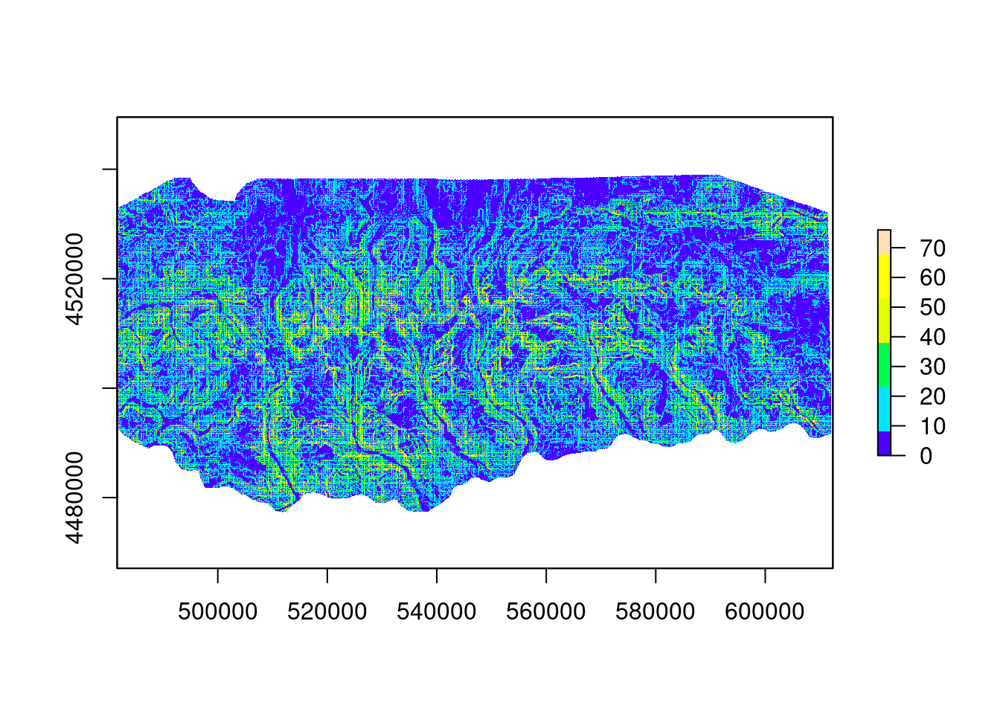
####************* this may take some time ****************
## Check rasters
rastfnlst <- c(b5fn, ndvifn, fnffn, elevfn, slpfn)
rastfnlst[1] "workshop_data/SampleData_Spatial/uintaN_TMb5.img"
[2] "workshop_data/SampleData_Spatial/uintaN_TMndvi.img"
[3] "workshop_data/SampleData_Spatial/uintaN_fnfrcl.img"
[4] "workshop_data/SampleData_Spatial/uintaN_elevm.img"
[5] "workshop_data/SampleData_Spatial/uintaN_slp.img" sapply(rastfnlst, raster)$`workshop_data/SampleData_Spatial/uintaN_TMb5.img`
class : RasterLayer
dimensions : 2080, 4358, 9064640 (nrow, ncol, ncell)
resolution : 30, 30 (x, y)
extent : 481612.1, 612352.1, 4477098, 4539498 (xmin, xmax, ymin, ymax)
crs : +proj=utm +zone=12 +datum=WGS84 +units=m +no_defs
source : uintaN_TMb5.img
names : Layer_1
values : 1, 255 (min, max)
$`workshop_data/SampleData_Spatial/uintaN_TMndvi.img`
class : RasterLayer
dimensions : 2080, 4358, 9064640 (nrow, ncol, ncell)
resolution : 30, 30 (x, y)
extent : 481612.1, 612352.1, 4477098, 4539498 (xmin, xmax, ymin, ymax)
crs : +proj=utm +zone=12 +datum=WGS84 +units=m +no_defs
source : uintaN_TMndvi.img
names : Layer_1
values : 0, 193 (min, max)
$`workshop_data/SampleData_Spatial/uintaN_fnfrcl.img`
class : RasterLayer
dimensions : 2080, 4358, 9064640 (nrow, ncol, ncell)
resolution : 30, 30 (x, y)
extent : 481612.1, 612352.1, 4477098, 4539498 (xmin, xmax, ymin, ymax)
crs : +proj=utm +zone=12 +datum=WGS84 +units=m +no_defs
source : uintaN_fnfrcl.img
names : layer
values : 1, 2 (min, max)
$`workshop_data/SampleData_Spatial/uintaN_elevm.img`
class : RasterLayer
dimensions : 2080, 4358, 9064640 (nrow, ncol, ncell)
resolution : 30, 30 (x, y)
extent : 481612.1, 612352.1, 4477098, 4539498 (xmin, xmax, ymin, ymax)
crs : +proj=utm +zone=12 +datum=WGS84 +units=m +no_defs
source : uintaN_elevm.img
names : Layer_1
values : 1847, 4114 (min, max)
$`workshop_data/SampleData_Spatial/uintaN_slp.img`
class : RasterLayer
dimensions : 2080, 4358, 9064640 (nrow, ncol, ncell)
resolution : 30, 30 (x, y)
extent : 481612.1, 612352.1, 4477098, 4539498 (xmin, xmax, ymin, ymax)
crs : +proj=utm +zone=12 +datum=WGS84 +units=m +no_defs
source : uintaN_slp.img
names : layer
values : 0, 77 (min, max)## We can also generate aspect from DEM. Save it to your workshop_data/SampleData_Spatial folder.
help(terrain)Help on topic 'terrain' was found in the following packages:
Package Library
raster /home/jason/R/x86_64-pc-linux-gnu-library/4.1
terra /home/jason/R/x86_64-pc-linux-gnu-library/4.1
Using the first match ...## This is an intermediate step, so we are not going to save it.
aspectr <- terrain(raster(elevfn), opt=c('aspect'), unit='radians')
aspectrclass : RasterLayer
dimensions : 2080, 4358, 9064640 (nrow, ncol, ncell)
resolution : 30, 30 (x, y)
extent : 481612.1, 612352.1, 4477098, 4539498 (xmin, xmax, ymin, ymax)
crs : +proj=utm +zone=12 +datum=WGS84 +units=m +no_defs
source : memory
names : aspect
values : 0, 6.283185 (min, max)# Note: Make sure to use radians, not degrees
####************* this may take some time ****************
plot(aspectr, col=terrain.colors(6))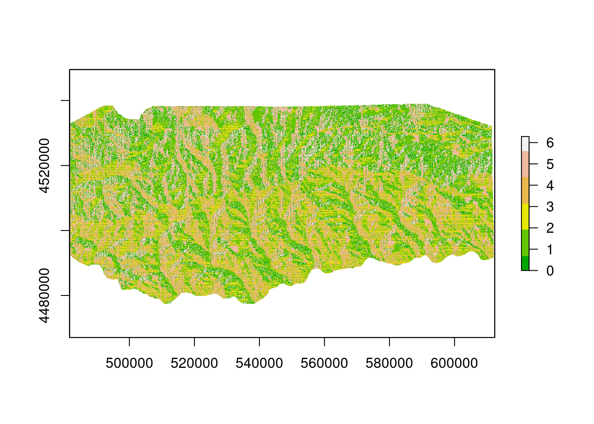
## Aspect is a circular variable. There are a couple ways to deal with this:
## 1. Convert the values to a categorical variable (ex. North, South, West, East)
## We derived aspect in radians. First convert radians to degrees.
aspectd <- round(aspectr * 180/pi)
aspectdclass : RasterLayer
dimensions : 2080, 4358, 9064640 (nrow, ncol, ncell)
resolution : 30, 30 (x, y)
extent : 481612.1, 612352.1, 4477098, 4539498 (xmin, xmax, ymin, ymax)
crs : +proj=utm +zone=12 +datum=WGS84 +units=m +no_defs
source : memory
names : layer
values : 0, 360 (min, max)## Now, create a look-up table of reclass values.
help(reclassify)
frommat <- matrix(c(0,45, 45,135, 135,225, 225,315, 315,361), 5, 2)
frommat [,1] [,2]
[1,] 0 225
[2,] 45 225
[3,] 45 315
[4,] 135 315
[5,] 135 361frommat <- matrix(c(0,45, 45,135, 135,225, 225,315, 315,361), 5, 2, byrow=TRUE)
frommat [,1] [,2]
[1,] 0 45
[2,] 45 135
[3,] 135 225
[4,] 225 315
[5,] 315 361tovect <- c(1, 2, 3, 4, 1)
rclmat <- cbind(frommat, tovect)
rclmat tovect
[1,] 0 45 1
[2,] 45 135 2
[3,] 135 225 3
[4,] 225 315 4
[5,] 315 361 1## Reclassify raster to new values.
aspcl <- reclassify(x=aspectd, rclmat, include.lowest=TRUE)
aspclclass : RasterLayer
dimensions : 2080, 4358, 9064640 (nrow, ncol, ncell)
resolution : 30, 30 (x, y)
extent : 481612.1, 612352.1, 4477098, 4539498 (xmin, xmax, ymin, ymax)
crs : +proj=utm +zone=12 +datum=WGS84 +units=m +no_defs
source : memory
names : layer
values : 1, 4 (min, max)unique(aspcl)[1] 1 2 3 4bks <- c(0,sort(unique(aspcl))) # Break points
cols <- c("dark green", "wheat", "yellow", "blue") # Colors
labs <- c("North", "East", "South", "West") # Labels
lab.pts <- bks[-1]-diff(bks)/2 # Label position
####************* this may take some time ****************
plot(aspcl, col=cols, axis.args=list(at=lab.pts, labels=labs), breaks=bks)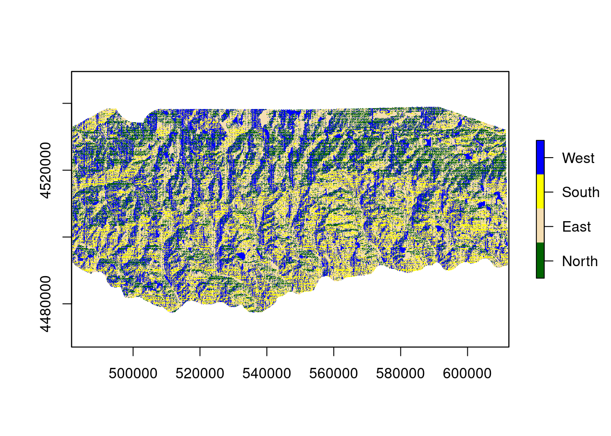
## 2. Convert to a linear variable (ex. solar radiation index; Roberts and Cooper 1989)
aspval <- (1 + cos(aspectr+30))/2 ## Roberts and Cooper 1989
aspvalclass : RasterLayer
dimensions : 2080, 4358, 9064640 (nrow, ncol, ncell)
resolution : 30, 30 (x, y)
extent : 481612.1, 612352.1, 4477098, 4539498 (xmin, xmax, ymin, ymax)
crs : +proj=utm +zone=12 +datum=WGS84 +units=m +no_defs
source : memory
names : layer
values : 7.793766e-13, 1 (min, max)plot(aspval)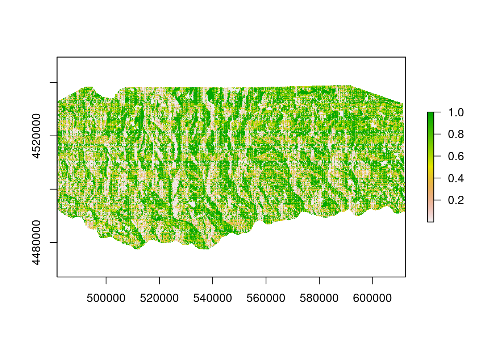
## Let's multiply by 100 and round so it will be an integer (less memory)
aspval <- round(aspval * 100)
aspvalclass : RasterLayer
dimensions : 2080, 4358, 9064640 (nrow, ncol, ncell)
resolution : 30, 30 (x, y)
extent : 481612.1, 612352.1, 4477098, 4539498 (xmin, xmax, ymin, ymax)
crs : +proj=utm +zone=12 +datum=WGS84 +units=m +no_defs
source : memory
names : layer
values : 0, 100 (min, max)plot(aspval)# Save this layer to file
aspvalfn <- "workshop_data/SampleData_Spatial/uintaN_aspval.img"
writeRaster(aspval, filename=aspvalfn, datatype='INT1U', overwrite=TRUE)
# Add aspval to rastfnlst
rastfnlst <- c(rastfnlst, aspvalfn)
## Converts aspect into solar radiation equivalents, with a correction of 30 degrees to reflect ## the relative heat of the atmosphere at the time the peak radiation is received.
## Max value is 1.0, occurring at 30 degrees aspect; min value is 0, at 210 degrees aspect.
#Roberts, D.W., and S. V. Cooper. 1989. Concepts and techniques in vegetation mapping. In Land classifications based on vegetation: applications for resource management. D. Ferguson, P. Morgan, and F. D. Johnson, editors. USDA Forest Service General Technical Report INT-257, Ogden, Utah, USA.Predictor Data Extraction

One of the most common uses of GIS and spatial processing functions in R is to build spatial variables which are then used for modelling. Here we have some data at specific coordinates where field plots were located, and we have several raster layers where we have environmental covariates. We want to extract values of raster layers at the locations of the point data.
## We need to check the projections of the rasters. If the projections are different,
## reproject the points to the projection of the rasters, it is much faster.
## We will use the plt2 table with LON/LAT coordinates and the response data attached.
head(plt2)# A tibble: 6 × 14
PLT_CN CARBO…¹ INVYR STATECD COUNT…² PLOT LON LAT NBRCND CRCOV…³ CCLIV…⁴
<chr> <dbl> <int> <int> <int> <int> <dbl> <dbl> <int> <dbl> <dbl>
1 119396… 1840 2006 49 9 80275 -110. 40.9 1 50 50
2 119401… 5069 2006 49 13 80402 -110. 40.6 1 43 55
3 119401… 1416 2006 49 13 80936 -111. 40.6 1 28 28
4 119402… 1336 2006 49 13 82102 -110. 40.7 1 39 39
5 119404… 6512 2006 49 13 83586 -111. 40.6 1 38 38
6 119405… 3295 2006 49 13 83925 -110. 40.6 1 27 27
# … with 3 more variables: FORNONSAMP <chr>, ELEVM <int>, aspen <dbl>, and
# abbreviated variable names ¹CARBON_KG, ²COUNTYCD, ³CRCOVPLT, ⁴CCLIVEPLT## We know the LON/LAT coordinates have the following projection:
prj4str <- "+proj=longlat +ellps=GRS80 +datum=NAD83 +no_defs"
# Check projections of each raster..
sapply(rastfnlst, function(x){ projection(raster(x)) }) workshop_data/SampleData_Spatial/uintaN_TMb5.img
"+proj=utm +zone=12 +datum=WGS84 +units=m +no_defs"
workshop_data/SampleData_Spatial/uintaN_TMndvi.img
"+proj=utm +zone=12 +datum=WGS84 +units=m +no_defs"
workshop_data/SampleData_Spatial/uintaN_fnfrcl.img
"+proj=utm +zone=12 +datum=WGS84 +units=m +no_defs"
workshop_data/SampleData_Spatial/uintaN_elevm.img
"+proj=utm +zone=12 +datum=WGS84 +units=m +no_defs"
workshop_data/SampleData_Spatial/uintaN_slp.img
"+proj=utm +zone=12 +datum=WGS84 +units=m +no_defs"
workshop_data/SampleData_Spatial/uintaN_aspval.img
"+proj=utm +zone=12 +datum=WGS84 +units=m +no_defs" ## Reproject SpatialPoints object to match raster projections.
help(project)Help on topic 'project' was found in the following packages:
Package Library
rgdal /home/jason/R/x86_64-pc-linux-gnu-library/4.1
terra /home/jason/R/x86_64-pc-linux-gnu-library/4.1
Using the first match ...rast.prj <- projection(raster(rastfnlst[1]))
xy <- cbind(plt$LON, plt$LAT)
xyprj <- project(xy, proj=rast.prj)Warning: PROJ support is provided by the sf and terra packages among others## Extract values (raster package)
help(extract)Help on topic 'extract' was found in the following packages:
Package Library
raster /home/jason/R/x86_64-pc-linux-gnu-library/4.1
magrittr /home/jason/R/x86_64-pc-linux-gnu-library/4.1
terra /home/jason/R/x86_64-pc-linux-gnu-library/4.1
Using the first match ...# Let's extract values from 1 layer.
tmp <- extract(raster(elevfn), xyprj)
head(tmp)[1] 2873 2575 2444 3474 2715 3360# Now, let's create a function to extract, so we can extract from all the rasters at the same time.
extract.fun <- function(rast, xy){ extract(raster(rast), xy) }
# Now, apply this function to the vector list of raster file names.
rastext <- sapply(rastfnlst, extract.fun, xyprj)
# Look at the output and check the class.
head(rastext) workshop_data/SampleData_Spatial/uintaN_TMb5.img
[1,] 72
[2,] 93
[3,] 129
[4,] 98
[5,] 98
[6,] 60
workshop_data/SampleData_Spatial/uintaN_TMndvi.img
[1,] 167
[2,] 148
[3,] 129
[4,] 143
[5,] 149
[6,] 165
workshop_data/SampleData_Spatial/uintaN_fnfrcl.img
[1,] 1
[2,] 1
[3,] 2
[4,] 2
[5,] 1
[6,] 1
workshop_data/SampleData_Spatial/uintaN_elevm.img
[1,] 2873
[2,] 2575
[3,] 2444
[4,] 3474
[5,] 2715
[6,] 3360
workshop_data/SampleData_Spatial/uintaN_slp.img
[1,] 6
[2,] 6
[3,] 28
[4,] 18
[5,] 19
[6,] 7
workshop_data/SampleData_Spatial/uintaN_aspval.img
[1,] 42
[2,] 0
[3,] 99
[4,] 42
[5,] 1
[6,] 42class(rastext)[1] "matrix" "array" ## Extract values (raster package) cont.. change names
# Let's make the column names shorter.
colnames(rastext)[1] "workshop_data/SampleData_Spatial/uintaN_TMb5.img"
[2] "workshop_data/SampleData_Spatial/uintaN_TMndvi.img"
[3] "workshop_data/SampleData_Spatial/uintaN_fnfrcl.img"
[4] "workshop_data/SampleData_Spatial/uintaN_elevm.img"
[5] "workshop_data/SampleData_Spatial/uintaN_slp.img"
[6] "workshop_data/SampleData_Spatial/uintaN_aspval.img"# Use the rastfnlst vector of file names to get new column names.
# First, get the base name of each raster, without the extension.
cnames <- unlist(strsplit(basename(rastfnlst), ".img"))
cnames[1] "uintaN_TMb5" "uintaN_TMndvi" "uintaN_fnfrcl" "uintaN_elevm"
[5] "uintaN_slp" "uintaN_aspval"# We could stop here, but let's make the names even shorter and remove
# 'uintaN_' from each name.
cnames2 <- substr(cnames, 8, nchar(cnames))
cnames2[1] "TMb5" "TMndvi" "fnfrcl" "elevm" "slp" "aspval"# Now, add names to matrix. Because the output is a matrix, we will use colnames.
colnames(rastext) <- cnames2
head(rastext) TMb5 TMndvi fnfrcl elevm slp aspval
[1,] 72 167 1 2873 6 42
[2,] 93 148 1 2575 6 0
[3,] 129 129 2 2444 28 99
[4,] 98 143 2 3474 18 42
[5,] 98 149 1 2715 19 1
[6,] 60 165 1 3360 7 42
# Now, let's append this matrix to the plot table with the response data (plt2).
head(plt2)# A tibble: 6 × 14
PLT_CN CARBO…¹ INVYR STATECD COUNT…² PLOT LON LAT NBRCND CRCOV…³ CCLIV…⁴
<chr> <dbl> <int> <int> <int> <int> <dbl> <dbl> <int> <dbl> <dbl>
1 119396… 1840 2006 49 9 80275 -110. 40.9 1 50 50
2 119401… 5069 2006 49 13 80402 -110. 40.6 1 43 55
3 119401… 1416 2006 49 13 80936 -111. 40.6 1 28 28
4 119402… 1336 2006 49 13 82102 -110. 40.7 1 39 39
5 119404… 6512 2006 49 13 83586 -111. 40.6 1 38 38
6 119405… 3295 2006 49 13 83925 -110. 40.6 1 27 27
# … with 3 more variables: FORNONSAMP <chr>, ELEVM <int>, aspen <dbl>, and
# abbreviated variable names ¹CARBON_KG, ²COUNTYCD, ³CRCOVPLT, ⁴CCLIVEPLT# We just want the response variables, so let's extract these columns along with the unique identifier of the table (CN, aspen, CARBON_KG).
modeldat <- cbind(plt2[,c("PLT_CN", "aspen", "CARBON_KG")], rastext)
head(modeldat) PLT_CN aspen CARBON_KG TMb5 TMndvi fnfrcl elevm slp aspval
1 11939665010690 0 1840 72 167 1 2873 6 42
2 11940123010690 0 5069 93 148 1 2575 6 0
3 11940180010690 0 1416 129 129 2 2444 28 99
4 11940287010690 0 1336 98 143 2 3474 18 42
5 11940414010690 0 6512 98 149 1 2715 19 1
6 11940500010690 0 3295 60 165 1 3360 7 42# Check if this is a data frame
is.data.frame(modeldat) [1] TRUEdim(modeldat)[1] 288 9# Let's also append the projected xy coordinates for overlaying with raster layers.
modeldat <- cbind(xyprj, modeldat)
head(modeldat) 1 2 PLT_CN aspen CARBON_KG TMb5 TMndvi fnfrcl elevm slp
1 589393.4 4530338 11939665010690 0 1840 72 167 1 2873 6
2 599757.3 4525551 11940123010690 0 5069 93 148 1 2575 6
3 594947.7 4535131 11940180010690 0 1416 129 129 2 2444 28
4 550308.7 4505418 11940287010690 0 1336 98 143 2 3474 18
5 548315.9 4487922 11940414010690 0 6512 98 149 1 2715 19
6 559454.7 4510667 11940500010690 0 3295 60 165 1 3360 7
aspval
1 42
2 0
3 99
4 42
5 1
6 42colnames(modeldat)[1:2] <- c("X", "Y")
head(modeldat) X Y PLT_CN aspen CARBON_KG TMb5 TMndvi fnfrcl elevm slp
1 589393.4 4530338 11939665010690 0 1840 72 167 1 2873 6
2 599757.3 4525551 11940123010690 0 5069 93 148 1 2575 6
3 594947.7 4535131 11940180010690 0 1416 129 129 2 2444 28
4 550308.7 4505418 11940287010690 0 1336 98 143 2 3474 18
5 548315.9 4487922 11940414010690 0 6512 98 149 1 2715 19
6 559454.7 4510667 11940500010690 0 3295 60 165 1 3360 7
aspval
1 42
2 0
3 99
4 42
5 1
6 42Now follow along with the Data Exploration section of the workshop slides. Think about what you would change and what you might leave the same regarding coding style and workflow.
Now we will continue on with the Modelling Generation section of the workshop slides, following the code below.
library(rpart)
## Classification tree
asp.tree <- rpart(aspen ~ TMb5 + TMndvi + fnfrcl + elevm + slp + aspval,data=modeldat, method="class")
plot(asp.tree)
text(asp.tree, cex=0.75)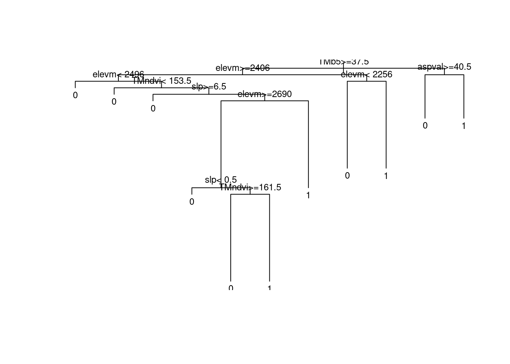
## Regression tree
carb.tree <- rpart(CARBON_KG ~ TMb5 + TMndvi + fnfrcl + elevm + slp + aspval, data=modeldat)
plot(carb.tree)
text(carb.tree, cex=0.75)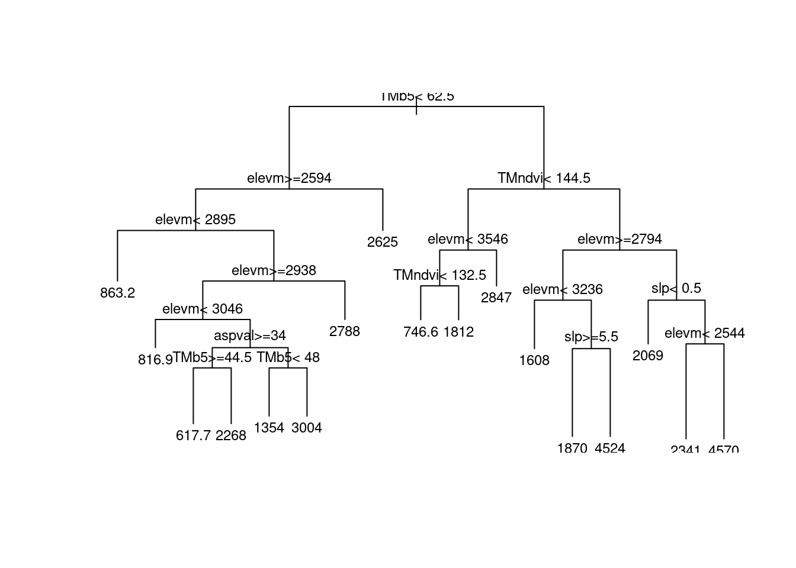
## Now, let's use the randomForests package – Classification tree
library(randomForest)
help(randomForest)
## Let's try with ASPEN binary, categorical response (presence/absence)
set.seed(66)
asp.mod <- randomForest(factor(aspen) ~ TMb5 + TMndvi + fnfrcl + elevm + slp + aspval, data=modeldat, importance = TRUE, na.action = na.exclude)
## Default parameters:
# ntree = 500 # Number of trees
# mtry = sqrt(p)# Number of predictors (p) randomly sampled at each node
# nodesize = 1 # Minimum size of terminal nodes
# replace = TRUE# Bootstrap samples are selected with replacement
## Look at results
asp.mod
Call:
randomForest(formula = factor(aspen) ~ TMb5 + TMndvi + fnfrcl + elevm + slp + aspval, data = modeldat, importance = TRUE, na.action = na.exclude)
Type of random forest: classification
Number of trees: 500
No. of variables tried at each split: 2
OOB estimate of error rate: 25%
Confusion matrix:
0 1 class.error
0 212 11 0.04932735
1 60 1 0.98360656summary(asp.mod) Length Class Mode
call 5 -none- call
type 1 -none- character
predicted 284 factor numeric
err.rate 1500 -none- numeric
confusion 6 -none- numeric
votes 568 matrix numeric
oob.times 284 -none- numeric
classes 2 -none- character
importance 24 -none- numeric
importanceSD 18 -none- numeric
localImportance 0 -none- NULL
proximity 0 -none- NULL
ntree 1 -none- numeric
mtry 1 -none- numeric
forest 14 -none- list
y 284 factor numeric
test 0 -none- NULL
inbag 0 -none- NULL
terms 3 terms call
na.action 4 exclude numeric err <- asp.mod$err.rate # Out-Of-Bag (OOB) error rate (of i-th element)
head(err) OOB 0 1
[1,] 0.2884615 0.2093023 0.6666667
[2,] 0.3657143 0.2928571 0.6571429
[3,] 0.3443396 0.2690058 0.6585366
[4,] 0.3319672 0.2164948 0.7800000
[5,] 0.3307393 0.1881188 0.8545455
[6,] 0.3159851 0.1753555 0.8275862tail(err) OOB 0 1
[495,] 0.2500000 0.04932735 0.9836066
[496,] 0.2500000 0.04932735 0.9836066
[497,] 0.2500000 0.04932735 0.9836066
[498,] 0.2500000 0.04932735 0.9836066
[499,] 0.2535211 0.05381166 0.9836066
[500,] 0.2500000 0.04932735 0.9836066mat <- asp.mod$confusion# Confusion matrix
mat 0 1 class.error
0 212 11 0.04932735
1 60 1 0.98360656## Classification tree - Output
# Plot the number of trees by the error rate
plot(1:500, err[,"OOB"], xlab="Number of trees", ylab="Error rate")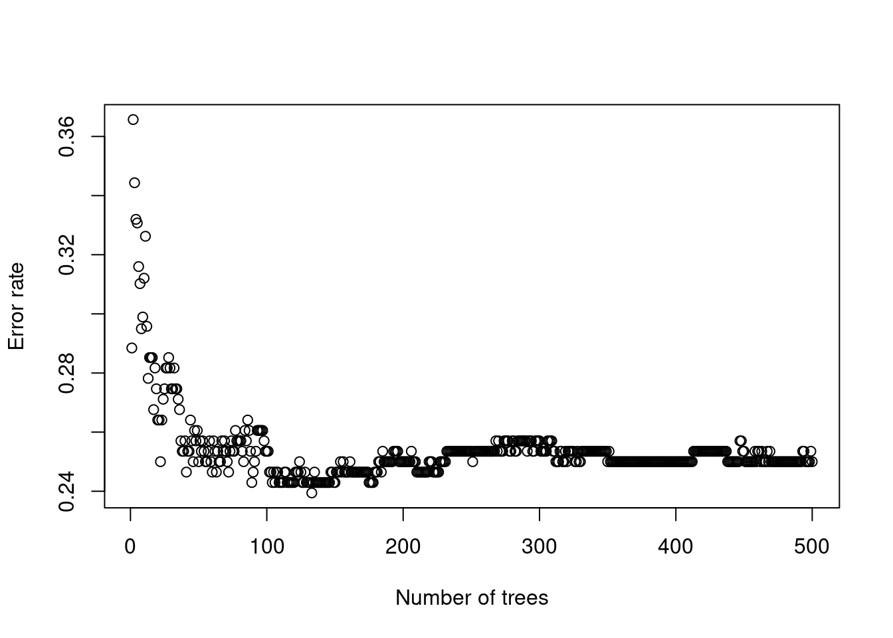
# Note: how many trees needed to stabilize prediction
## Calculate the percent correctly classified from confusion (error) matrix
mat 0 1 class.error
0 212 11 0.04932735
1 60 1 0.98360656pcc <- sum(diag(mat[,1:2]))/sum(mat) * 100
pcc[1] 74.72821pcc <- round(pcc, 2)## Round to nearest 2 decimals
pcc[1] 74.73library(PresenceAbsence)
pcc(mat[,1:2], st.dev=TRUE) PCC PCC.sd
1 0.75 0.02573993Kappa(mat[,1:2], st.dev=TRUE) Kappa Kappa.sd
0 -0.04650197 0.0302359## The Kappa statistic summarizes all the available information in the confusion matrix.
## Kappa measures the proportion of correctly classified units after accounting for the probability of chance agreement.
## Now, let's use the randomForests package – regression tree
## Now, let's try with the continuous, CARBON_KG response
set.seed(66)
carb.mod <- randomForest(CARBON_KG ~ TMb5 + TMndvi + elevm + slp + aspval, data=modeldat, importance = TRUE, na.action=na.exclude)
## Default parameters:
# ntree = 500 # Number of trees
# mtry = p/3# Number of predictors (p) randomly sampled at each node
# nodesize = 5 # Minimum size of terminal nodes
# replace = TRUE# Bootstrap samples are selected with replacement
## Look at results
carb.mod
Call:
randomForest(formula = CARBON_KG ~ TMb5 + TMndvi + elevm + slp + aspval, data = modeldat, importance = TRUE, na.action = na.exclude)
Type of random forest: regression
Number of trees: 500
No. of variables tried at each split: 1
Mean of squared residuals: 4130918
% Var explained: -7.24summary(carb.mod) Length Class Mode
call 5 -none- call
type 1 -none- character
predicted 284 -none- numeric
mse 500 -none- numeric
rsq 500 -none- numeric
oob.times 284 -none- numeric
importance 10 -none- numeric
importanceSD 5 -none- numeric
localImportance 0 -none- NULL
proximity 0 -none- NULL
ntree 1 -none- numeric
mtry 1 -none- numeric
forest 11 -none- list
coefs 0 -none- NULL
y 284 -none- numeric
test 0 -none- NULL
inbag 0 -none- NULL
terms 3 terms call
na.action 4 exclude numeric ## Regression tree - Output
names(carb.mod) [1] "call" "type" "predicted" "mse"
[5] "rsq" "oob.times" "importance" "importanceSD"
[9] "localImportance" "proximity" "ntree" "mtry"
[13] "forest" "coefs" "y" "test"
[17] "inbag" "terms" "na.action" mse <- carb.mod$mse # Mean square error (of i-th element)
rsq <- carb.mod$rsq # Pseudo R-squared (1-mse/Var(y))(of i-th element)head(mse)[1] 6129997 5570019 5498393 5421758 5356727 5171813tail(mse)[1] 4128044 4129220 4130748 4130852 4130664 4130918tail(rsq)[1] -0.07163319 -0.07193863 -0.07233534 -0.07236227 -0.07231334 -0.07237937## Regression tree - Output
# Plot the number of trees by the mse (Mean Square Error)
plot(1:500, mse, xlab="Number of trees", ylab="Mean Square Error rate")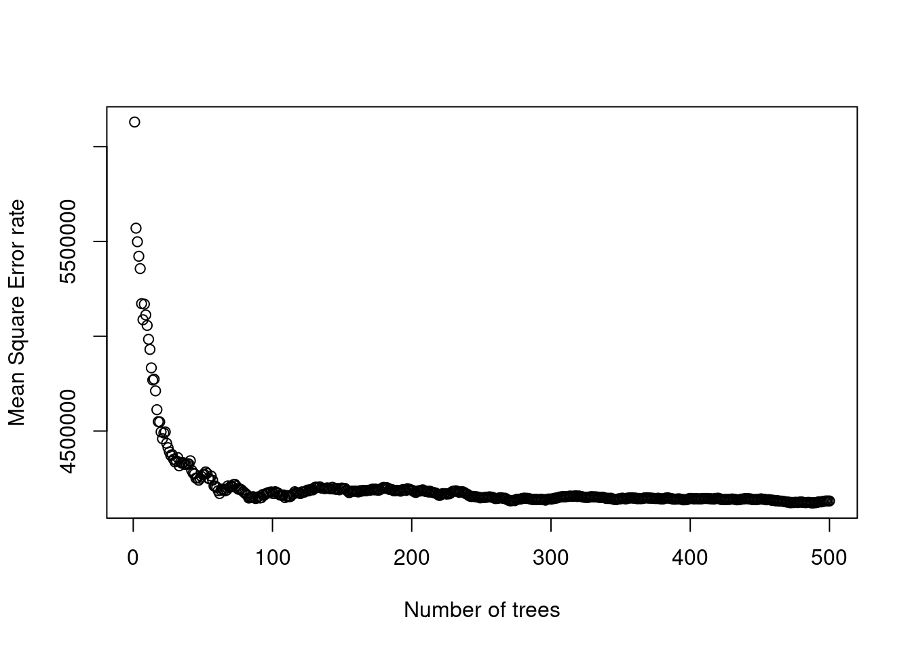
# Note: how many trees needed to stabilize prediction
# Similarly, plot the number of trees by the rsq (R-Squared)
plot(1:500, rsq, xlab="Number of trees", ylab="R-Squared")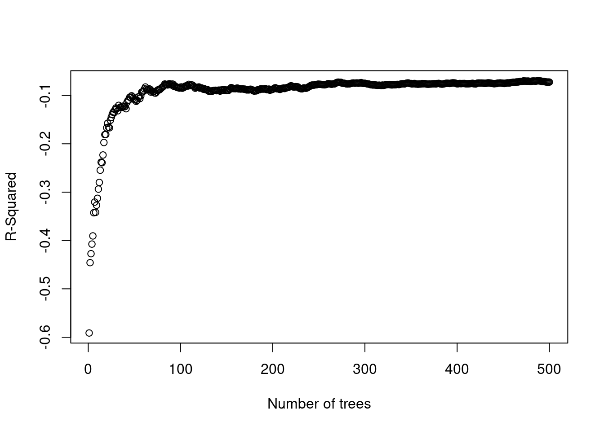
## Again: how many trees needed to stabilize prediction
## Variable importance – Classification tree
## Get importance table
asp.imp <- abs(asp.mod$importance)
asp.imp 0 1 MeanDecreaseAccuracy MeanDecreaseGini
TMb5 0.008492861 0.00106732947 0.006720638 21.870695
TMndvi 0.011361022 0.00090855490 0.008877476 19.303862
fnfrcl 0.002862576 0.00194577172 0.002638871 1.435293
elevm 0.001779809 0.00005164993 0.001533177 22.726870
slp 0.004208594 0.00629447891 0.001934033 15.954537
aspval 0.007676320 0.00664058231 0.007516978 12.314229## Get the number of measures (columns) and number of predictors
ncols <- ncol(asp.imp) ## Number of measures
numpred <- nrow(asp.imp)## Get number of predictors
## Plot the measures of variable importance for ASPEN presence/absence
par(mfrow=c(2,2))
for(i in 1:ncols){ ## Loop thru the different importance measures
ivect <- sort(asp.imp[,i], dec=TRUE)## Get 1st measure, descending order
iname <- colnames(asp.imp)[i] ## Get name of measure
# Generate histogram plot (type='h') with no x axis (xaxt='n')
plot(ivect, type = "h", main = paste("Measure", iname), xaxt="n",
xlab = "Predictors", ylab = "", ylim=c(0,max(ivect)))
# Add x axis with associated labels
axis(1, at=1:numpred, lab=names(ivect))
}
## Let’s make a function and plot importance values for CARBON_KG model.
plotimp <- function(itab){
ncols <- ncol(itab) ## Number of measures
numpred <- nrow(itab) ## Get number of predictors
## Plot the measures of variable importance
par(mfrow = c(ncols/2,2))
for(i in 1:ncols){ ## Loop thru the different importance measures
ivect <- sort(itab[,i], dec=TRUE) ## Get 1st measure, sorted decreasing
iname <- colnames(itab)[i] ## Get name of measure
# Generate histogram plot (type='h') with no x axis (xaxt='n')
plot(ivect, type = "h", main = paste("Measure", iname), xaxt="n",
xlab = "Predictors", ylab = "", ylim=c(0,max(ivect)))
# Add x axis with associated labels
axis(1, at=1:numpred, lab=names(ivect)) }
}
## Check function with ASPEN model
plotimp(asp.imp)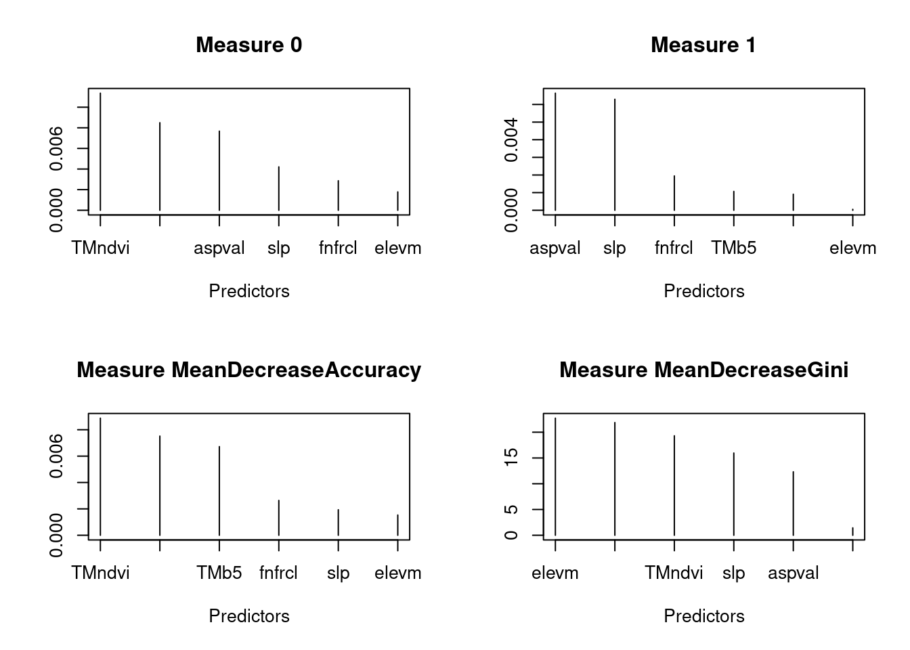
## Now, run funtion with CARBON_KG model
plotimp(carb.mod$importance)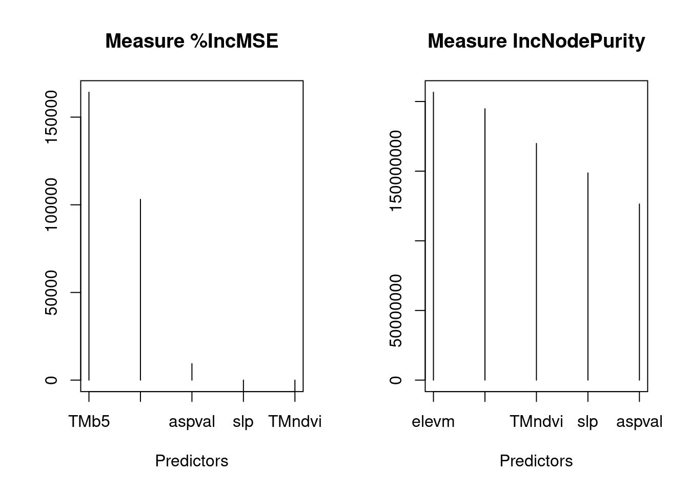
## Other information from RandomForest model (proximity=TRUE)
# Measure of internal structure (Proximity measure)
# - The fraction of trees in which each plot falls in the same terminal node.
# - Similarity measure - in theory, similar data points will end up in the same terminal node.
## Let's try adding proximity to CARBON_KG model
set.seed(66)
carb.mod <- randomForest(CARBON_KG ~ TMb5 + TMndvi + elevm + slp + aspval, data=modeldat, importance = TRUE, proximity = TRUE, na.action = na.exclude)
names(carb.mod) [1] "call" "type" "predicted" "mse"
[5] "rsq" "oob.times" "importance" "importanceSD"
[9] "localImportance" "proximity" "ntree" "mtry"
[13] "forest" "coefs" "y" "test"
[17] "inbag" "terms" "na.action" carb.prox <- carb.mod$proximity
#you can now explore carb.proxThe final step in the analysis is to apply the model to the full dataset, in order to map the predicted outcomes.
3.1.1 Resources this week
3.2 Parameterization/Validation I/II
Demo in class